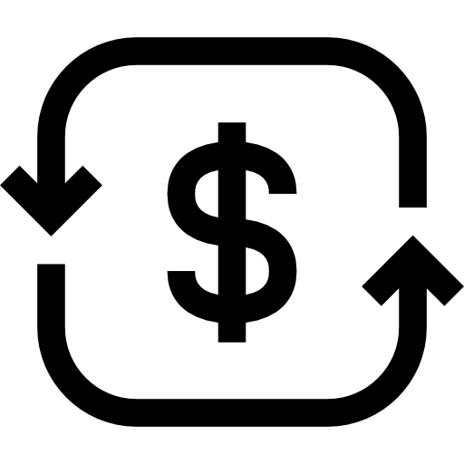

경제 뉴스 브리핑 — 2026년 10월 03일 (토)| 종목 | 가격 | 변동 |
|---|---|---|
| 🟢 S&P 500 | 7,722.72 | ▲ 0.73% |
| 🟢 나스닥 | 27,190.86 | ▲ 1.19% |
| 🟢 반도체 ETF | 588.90 | ▲ 2.18% |
| 🟢 엔비디아 | 233.95 | ▲ 1.34% |
| 🔴 COMEX 금 | 4,162.30 | ▼ 0.95% |
| 🔴 달러/원 환율 | 1,342.51 | ▼ 1.06% |
| 🔴 WTI 원유 | 91.11 | ▼ 1.90% |
'간절기부터 한겨울까지' 네파, 테크 다운 출시
아웃도어 브랜드 네파가 날씨에 맞춰 겹쳐 입을 수 있는 '에어써밋 시리즈'를 출시했다. 이 제품은 간절기부터 한겨울까지 활용 가능하다.
블랙록·피델리티도 못 막는다?… 기관 자금 쏟아져도 8만 4,700달러에 갇...
거시경제 악재로 인해 비트코인 가격이 8만 4,700달러에 갇혀 있으며, 기관 자금 유입에도 불구하고 위험 자산 선호 심리가 냉각되고 있다.
삼성자산운용, 커버드콜 ETF 조합으로 월 2회 분배금 제시
삼성자산운용이 다양한 만기의 옵션을 활용한 커버드콜 ETF를 출시하며, 개인투자자들에게 월 2회의 분배금을 제공할 예정이다.
월 4900원에 쇼핑·콘텐츠·금융까지…카카오·네이버 '구독전쟁' 점화
카카오와 네이버가 월 4900원으로 다양한 서비스를 제공하는 구독 모델을 출시하며 경쟁을 벌이고 있다. 신규 가입자는 주식과 멜론 캐시를 받을 수 있다.
쿠팡 조나단 리 임원, 보상 주식 5519주 사전 계획대로 매각…지배구조...
쿠팡의 조나단 리 임원이 보유한 클래스 A 보통주 5519주를 사전 계획에 따라 매각했다. 이번 매각은 쿠팡의 전체 주식 수에 비해 미미한 수준이다.
Pool supplies retailer files for bankruptcy, to close 76 stores
Leslie's Inc.가 Chapter 11 파산을 신청하며 76개 매장을 폐쇄하고 약 6억 8500만 달러의 부채를 줄일 계획이다. 이 회사는 운영을 계속할 예정이다.
DOJ will not reopen criminal probe of Powell, Blanche says
미국 법무부가 파월 의장에 대한 범죄 조사 재개를 하지 않겠다고 발표했다. 이는 연준의 독립적인 감시 기관이 범죄 위반 증거를 발견하지 않았기 때문이다.
FAA Says 737 MAX Software Glitch Doesn’t Pose Safety Issue
미국 연방항공청(FAA)은 737 MAX의 소프트웨어 결함이 안전 문제를 일으키지 않는다고 발표했다. 이는 항공사와 승객들에게 긍정적인 소식으로 작용할 것으로 보인다.